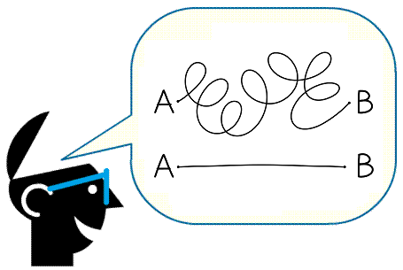

La síntesis consiste en presentar las ideas principales de un texto de forma breve y precisa; en ese sentido, la síntesis requiere una previa lectura y comprensión del texto para poder así identificar su información más relevante y significativa. En el proceso de elaborar una síntesis ejercitas y mejoras tu capacidad de comprensión y de análisis durante la lectura; además, la elaboración de síntesis de diferentes textos es de gran utilidad en tu vida universitaria, pues evidencia tu entendimiento de aquellos textos y te facilita el estudio con base en la información más importante de estos sin tener que remitire nuevamente a todo el texto original.
Cuando lees un texto y deseas obtener una síntesis de él, puede suceder que contenga demasiada información y se te dificulte realizar tal actividad; por eso, en el desarrollo de este módulo aprenderás algunas estrategias textuales, denominadas Supresión, Generalización e Integración, que te permitirán extraer la información relevante de un texto y poder así formular una síntesis apropiada.